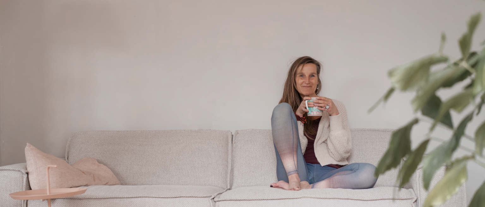

Over mij
Je bent ergens naar op zoek of misschien geraakt door het aanbod op deze website. Wellicht overweeg je met mij te werken in coach- of ademsessies, yogalessen of mee te gaan met een retraite of naar het mooie Nepal. Dan wil je misschien ook iets meer over mij weten.
Mijn naam is Marion Werger. Opgeleid als verpleegkundige, sociaal cultureel werker, yogadocent/therapeut, loopbaan-, stress & burnout- en ademcoach. Tevens ben ik oprichter van Culturele Yogareizen naar Nepal. Organiseren, creëren en het begeleiden van mensen staat centraal in mijn werkleven.
Ik ben geboren in Geesteren Overijssel en vertrok op mijn 18e naar Utrecht. Ik reisde tussen studies en banen als verpleegkundige en sociaal cultureel werker over de wereld, werkte 2,5 jaar in Kenia en 1 jaar in Nepal. Uiteindelijk belandde ik met mijn gezin in Borculo, de Achterhoek, waar ik nu al weer meer dan 18 jaar woon en een praktijk voor yoga, coaching en ademwerk heb.
De zoektocht naar bewustwording, gezond leven, rust, ontspanning, balans en dat er meer moest zijn dan alleen maar gedachten en een vol hoofd, begon in mijn studententijd. Er was zoveel onrust in mij, donker en lichtheid, ging altijd over grenzen heen met ups en downs. Ik sportte veel, kon mijn energie kwijt, werd fysiek sterk maar het ‘aanstaan’ en de onrust in mij bleef.
Ik bezocht een psycholoog, haptotherapeut, een gespecialiseerde logopediste (ademtherapeut) en ging naar een yogales. Daar kwam alles samen. Ik werd me bewust van mijn lichaam, bewegingen, in- en ontspanning, ademhaling en balans tussen hoofd, hart en hand. Deze ervaring was zo bijzonder en interessant, dat ik vanaf dat moment dagelijks met yoga bezig ben gegaan.
Vele opleidingen volgden, dit deed ik naast mijn coachwerk, gezin en de opvoeding van mijn inmiddels volwassen zoons.

Al meer dan 20 jaar geef ik nu les. Groeps- en individuele yoga, therapeutische yoga, retreats en workshops.
Vanuit het jaar wonen en werken als yogadocent in Nepal, zijn de Culturele Yoga Wandelreizen naar het mooie en mijn zo geliefde Nepal ontstaan. Er is geen ander land in de wereld waar ik zo “thuis kom’’. Reizen is voor mij een verrijking van het leven, het vergroot mijn blikveld op het leven.

Ik geef les in diverse stijlen en heb in de loop de jaren mijn vorm gevonden met yin en vinyasa yoga & ademwerk. Actief en passief, creatief, bewegend en verstillend. Deelnemers omschrijven mij als ‘down to earth’ en zeer professioneel en geven aan dat mijn jarenlange ervaring voelbaar is.
“Haar yoga is meer dan yoga, diepgaand en een combinatie van bewegen, meditatie, ademen en coachen en dat raakt.”
Als Yogadocent en Coach (specialisatie stress & burnout) is mijn werk in de loop der jaren ook steeds meer samen komen te vallen. Naast verbale gesprekstechnieken werk ik lichaamsgericht. Het lichaam draagt immers ons leven.
Wil je meer weten over mijn achtergrond en opleidingen… scroll dan door naar onderen…
Inspirerend – Spelen – Eerlijk – Authentiek – Enthousiast – Een doener – Professioneel
Bij iedere les of sessie is het mijn doel om mensen een gevoel van ’thuis komen’ te geven. Heb je een vraag of wil je een afspraak maken? Neem gerust contact met mij op.